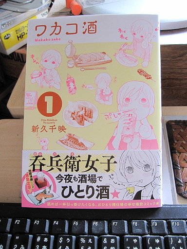

発売日から一日遅れで、ワカコ酒というマンガを購入しました。

主人公のワカコが、ただ飲んでうまい肴を食すという作品で、うんちくなどはなく、ほぼワカコのモノローグで構成されています。それは美味そうに食べて飲むのですよねぇ。読むと、つられて食うか飲むか、あるいはその両方をしたくなります。
コミックスの第一話の終わりのモノローグが、公開されている試し読みの終わりのモノローグと異なっているのですが、試し読みの終わりのモノローグほうが呑兵衛のこだわりを感じさせるものになっていて、そちらの方が面白いかなと思ったりもしましたが、これはこれでありかも。